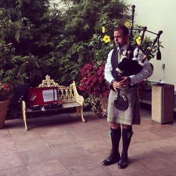
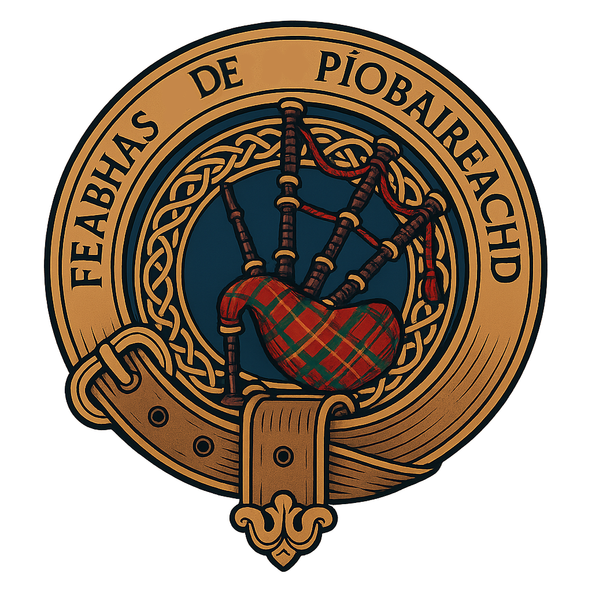

Fantasy writing
Journey through worlds inspired by Anglo-Saxon lore, wyrd threads, and fierce, imperfect heroes. Audiobooks, novels, and serialized storytelling await.
Discover stories
Welcome! I’m Matty Taylor, a professional Scottish bagpiper and myth-inspired fantasy author based in Elkins, West Virginia.
I weave stories and soundscapes that honor the echoes of the past while resonating with modern audiences—from ceremonial performances to epic sagas rooted in Anglo-Saxon mysticism.
From myth-laden novels to ceremonial bagpipe sets, each offering is crafted to feel immersive, intentional, and deeply rooted in tradition.
Journey through worlds inspired by Anglo-Saxon lore, wyrd threads, and fierce, imperfect heroes. Audiobooks, novels, and serialized storytelling await.
Discover stories
Memorials, weddings, dedications, and celebrations—performed with respect, heart, and over two decades of professional experience.
Plan a performanceI believe art should feel alive—steeped in history yet bold enough to meet the moment. Whether through a haunting air on the pipes or a new chapter released to readers, each piece is designed to connect, comfort, and spark wonder.

Serving communities across West Virginia, southwestern Pennsylvania, and the Mid-Atlantic. Performances are available on short notice for memorial services or booked months in advance for celebrations and cultural events.
Let’s shape an experience that feels meaningful—whether that’s a single lament echoing through a hillside cemetery or an evening of readings woven with live music.
Available for: funerals, weddings, monument dedications, Highland games, festivals, book launches, and creative workshops.